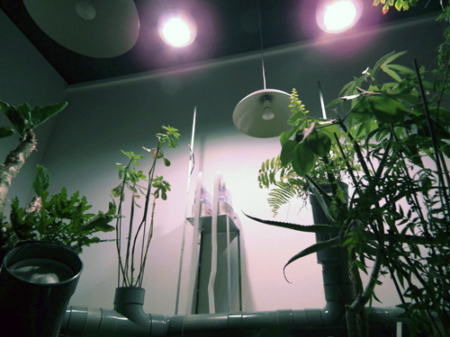
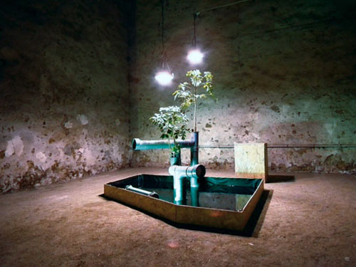
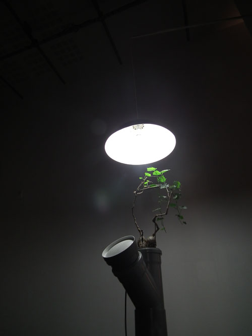
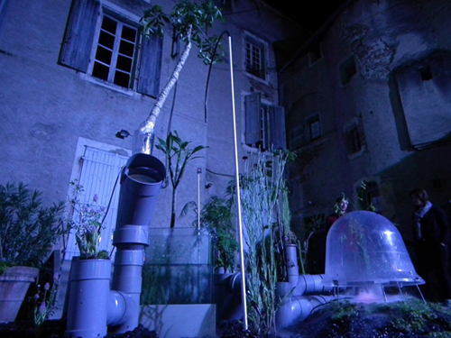
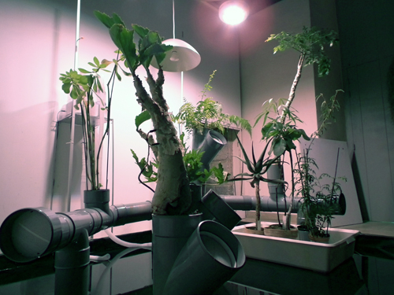
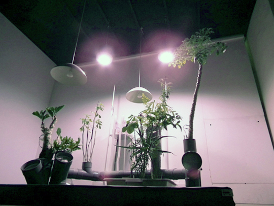

Pièce pour montée de sève, Les Subsistances, Lyon, 2010
• EXTRAITS SONORES
Nous présentons ici quelques extraits de compositions sonores qui ont été associées aux plantes lors de nos recherches et expositions.
Duo pour montée de sève, Cussiona spicata, Araliaceae (Zimbabwe)
Biennale Art Science, en Essone, Arts Sciences Factory 2011
Cet enregistrement est réalisé à partir des données relative à la vitesse de circulation ascendante de sève sur deux sujets végétaux, de Cussonia spicata.
Vitaceae.sp, Solo pour montée de sève, Galerie Michel Journiac 2011
Extrait de la composition généré par la plante grâce au dispositif, 1'19
Extrait d'un mixage à partir du dispositif, 2'19, Nicolas Bralet 2012.

Pièce pour montée de sève, Cahors juin jardin, 2011
Cussonia spicata, Araliaceae (Zimbabwe), enregistrement Cahors 2011
EXTRAIT SONORE: 2'02
Composition associant la montée de sève dans le végétal et les timbres, souffles et effets du contexte climatique environnant.

Pièce pour montée de sève, Les subsistances, 2010.
Les plantes par effet de seuil déclenchent et controlent une gestion d'appoint du climat. La température de l'installation varie ainsi entre 20° et 24°. Ainsi selon le nombre de visiteur, et en réaction à la montée générale de la température de l'espace d'installation, les plantes activaient une légère brume afin de rétablir la fraicheur désirée.
EXTRAIT SONORE: '24

Pièce pour montée de sève, Les Subsistances, Lyon, 2010